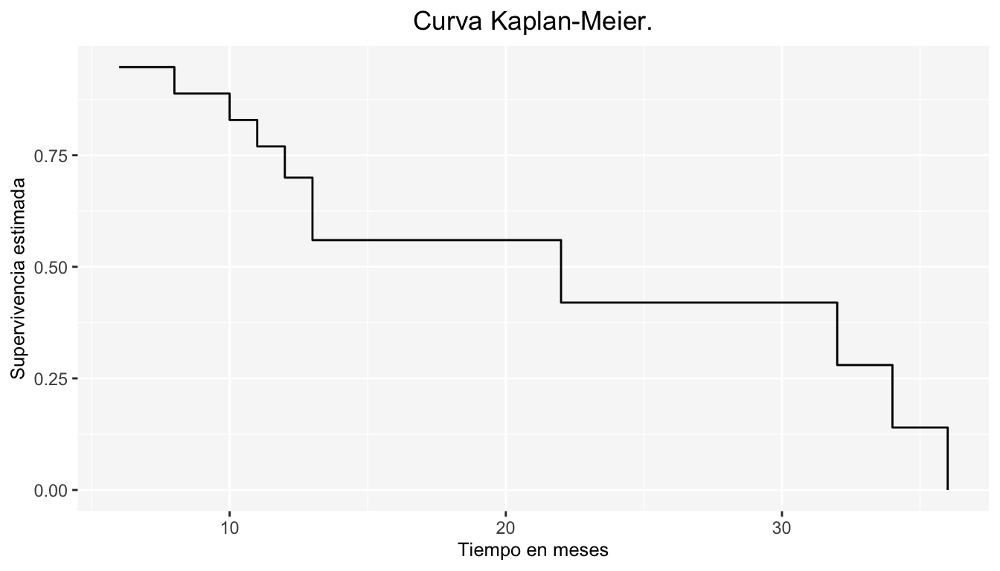

Capítulo 7 Modelos No Paramétricos para la Función de Supervivencia
Los métodos estadísticos más utilizados en el análisis de supervivencia son los No Paramétricos. Debido a que sólo cuando se conoce la distribución que siguen los tiempos de falla, las estimaciones con métodos paramétricos será adecuada. La eficiencia de los métodos no paramétricos radica en que los datos no sigan una distribución teórica.
Puesto que nuestro interés es estimar \(S(t)\), en los métodos no paramétricos las curvas de supervivencia, por lo general, se producen usando uno de dos métodos: el análisis actuarial o el método límite-producto de Kaplan-Meier.
Es importante mencionar que, cuando no hay datos censurados podemos estimar \(S(t)\) de manera sencilla mediante la función empírica:
\[ \hat S(t) = \hat{\mathbb{P}}(T>t) = \frac{ \# t_{i}>t}{n} \]
donde la muestra aleatoria es: \(t_{(1)}\leq t_{(2)}\leq...\leq t_{(n)}\).
En este caso, la función será escalonada con decrementos \(\frac{1}{n}\) si todas las observaciones son distintas, o con decrementos \(\frac{d}{n}\) si hay \(d\) tiempos de falla iguales a \(t\).
Los métodos que se presentan a continuación incluyen la percepción del censuramiento en los datos; quizá el alumno está familiarizado con alguno de ellos, pues se estudian en cursos previos.
7.1 Método Actuarial (Tabla de Vida)
El análisis actuarial divide el tiempo en intervalos y calcula la supervivencia en cada intervalo. La longitud del intervalo depende de la frecuencia con que ocurre el suceso de interés.
Se asume que:
- Todos los abandonos durante un intervalo dado ocurren aleatoriamente durante dicho intervalo.
- Las personas que se retiran del estudio tienen un destino parecido a las que se quedan.
- El periodo de tiempo durante el cual una persona entra en el estudio no tiene efecto en la respuesta.
Dividimos el eje del tiempo en \(k+1\) intervalos \(l_{j}=(a_{j-1},a_{j}]\). Entonces para cada elemento de una muestra aleatoria de tamaño \(n\), se observa un tiempo de fallo \(T\) o un valor censurado por la derecha \(C\).
Definimos:
- \(n_{j}\): número de individuos en riesgo (vivos o no censurados) al tiempo \(a_{j-1}\).
- \(d_{j}\): número de fallas en el intervalo \(l_{j}\).
- \(c_{j}\): número de individuos que se censuran en el intervalo \(l_{j}\).
El número de individuos sin falla al inicio de \(l_{j}\) es \(n_{j}\).
Suponga que la función de supervivencia para los tiempos de falla es \(S(t) = \mathbb{P}(T>t)\). Entonces:
\[ S(a_{j}) = \mathbb{P}(T>a_{j}) = \mathbb{P}(T>a_{0})\mathbb{P}(T>a_{1}|T>a_{0})...\mathbb{P}(T>a_{j}|T>a_{j-1}) \]
Sea:
- \(S_{j} = S(a_{j})\)
- \(p_{j} = \mathbb{P}(T>a_{j}|T>a_{j-1}) =\frac{S_{j}}{S_{j-1}}\) (Sobrevivencia hasta \(a_{j}\) después de haber sobrevivido hasta \(a_{j-1}\))
- \(q_{j} = 1-p_{j} = \mathbb{P}(T\leq a_{j}|T>a_{j-1}) = \frac{S_{j-1}-S_{j}}{S_{j-1}}\) (No sobrevivir hasta \(a_{j}\) después de haber sobrevivido hasta \(a_{j-1}\))
Donde \(S_{0} = 1\), \(S_{k+1} = 0\), \(q_{k+1} = 1\). Por lo tanto:
\[ S_{j} = p_{1}p_{2}...p_{j} \]
El objetivo es estimar \(S_j\) con base en la estimación de \(p_j=1-q_j\).
Si en \(l_{j}\) no hay observaciones censuradas, entonces estimamos \(S_j\) por medio de:
\[ \hat{q_{j}} = \frac{d_{j}}{n_{j}} \]
Por otro lado, si en \(l_{j}\) hay observaciones censuradas, y suponiendo que las censuras se distribuyen uniformemente, entonces \(S_j\) se puede obtener mediante:
\[ \hat{q_{j}} = \frac{d_{j}}{n_{j}-\frac{c_{j}}{2}} \]
De modo que, para este caso, se tiene:
\[ \hat S_j=\prod_{i=1}^{j}\left(1-\frac{d_{i}}{n_{i}-\frac{c_{i}}{2}}\right) \]
Ejemplo
El siguiente ejemplo es tomado del libro (Collett 2015), ejemplo 1.3 :
Supervivencia de pacientes con myeloma múltiple.
Myeloma múltiple es una enfermedad caracterizada por la acumulación múltiple de células plasmáticas anormales, un tipo de células blancas de la sangre, en la médula ósea. La proliferación de las células plasmáticas anormales dentro de los huesos causa dolor y la destrucción del tejido óseo. El objetivo de un estudio realizado en el Centro Médico de la Universidad del Oeste de Virginia, USA, fue examinar la asociación entre los valores de ciertas variables explicativas(covariables) y el tiempo de supervivencia de los pacientes. En el estudio, el tiempo de supervivencia fue medido en meses, desde el diagnóstico hasta la muerte por myeloma múltiple.
La siguiente tabla muestra un fragmento de los resultados obtenidos en el estudio. En ésta se relaciona a un total de 48 pacientes, todos ellos estaban entre los 50 y 80 años. Algunos de estos pacientes no habían muerto durante el tiempo que el estudio fue completado, por lo que estos individuos contribuyeron con tiempos censurados por la derecha. La codificación del estatus de supervivencia de un individuo en la tabla es codificado con un \(0\) si la observación es censurada y \(1\) si fue muerte por myeloma.
| Patient number | Survival time | Status | Age | Sex | Bun | Ca | Hb | Pcells | Protein |
|---|---|---|---|---|---|---|---|---|---|
| 1 | 13 | 1 | 66 | 1 | 25 | 10 | 14.6 | 18 | 1 |
| 2 | 52 | 0 | 66 | 1 | 13 | 11 | 12.0 | 100 | 0 |
| 3 | 6 | 1 | 53 | 2 | 15 | 13 | 11.4 | 33 | 1 |
| 4 | 40 | 1 | 69 | 1 | 10 | 10 | 10.2 | 30 | 1 |
| 5 | 10 | 1 | 65 | 1 | 20 | 10 | 13.2 | 66 | 0 |
| 6 | 7 | 0 | 57 | 2 | 12 | 8 | 9.9 | 45 | 0 |
| 7 | 66 | 1 | 52 | 1 | 21 | 10 | 12.8 | 11 | 1 |
| 8 | 10 | 0 | 60 | 1 | 41 | 9 | 14.0 | 70 | 1 |
| 9 | 10 | 1 | 70 | 1 | 37 | 12 | 7.5 | 47 | 0 |
| 10 | 14 | 1 | 70 | 1 | 40 | 11 | 10.6 | 27 | 0 |
| 11 | 16 | 1 | 68 | 1 | 39 | 10 | 11.2 | 41 | 0 |
| 12 | 4 | 1 | 50 | 2 | 172 | 9 | 10.1 | 46 | 1 |
| 13 | 65 | 1 | 59 | 1 | 28 | 9 | 6.6 | 66 | 0 |
| 14 | 5 | 1 | 60 | 1 | 13 | 10 | 9.7 | 25 | 0 |
| 15 | 11 | 0 | 66 | 2 | 25 | 9 | 8.8 | 23 | 0 |
| 16 | 10 | 1 | 51 | 2 | 12 | 9 | 9.6 | 80 | 0 |
| 17 | 15 | 0 | 55 | 1 | 14 | 9 | 13.0 | 8 | 0 |
| 18 | 5 | 1 | 67 | 2 | 26 | 8 | 10.4 | 49 | 0 |
| 19 | 76 | 0 | 60 | 1 | 12 | 12 | 14.0 | 9 | 0 |
| 20 | 56 | 0 | 66 | 1 | 18 | 11 | 12.5 | 90 | 0 |
Ahora bien, se busca estimar \(S(t)\) mediante la construcción de la tabla de vida. La información registrada en otras variables explicativas será ignorada.
Se consideran los intervalos de tiempo, para cada uno se calcula el número de pacientes que fallecieron \(d_{j}\),el número de datos censurados \(c_{j}\), el número en riesgo de muerte al inicio de cada uno de estos intervalos \(n_{j}\), y el número ajustado en riesgo \(n_{j}^{*}=n_{j}-\frac{c_{j}}{2}\) (dado que hay datos censurados). Finalmente, la probabilidad de supervivencia en cada intervalo es estimada(multiplicando cada \(p_j\)).
Los cálculos son presentados a continuación:
| Interval | Time period | \(d_j\) | \(c_j\) | \(n_j\) | \(n_j^{*}\) | \(p_j\) | \(S(t)\) |
|---|---|---|---|---|---|---|---|
| 1 | 0- | 16 | 4 | 48 | 46.0 | 0.6521739 | 0.6521739 |
| 2 | 12- | 10 | 4 | 28 | 26.0 | 0.6153846 | 0.4013378 |
| 3 | 24- | 1 | 0 | 14 | 14.0 | 0.9285714 | 0.3726708 |
| 4 | 36- | 3 | 1 | 13 | 12.5 | 0.7600000 | 0.2832298 |
| 5 | 48- | 2 | 2 | 9 | 8.0 | 0.7500000 | 0.2124224 |
| 6 | 60- | 4 | 1 | 5 | 4.5 | 0.1111111 | 0.0236025 |
Y la curva de supervivencia es la dada en la figura 7.1:
Figura 7.1: Supervivencia estimada para los pacientes con myeloma múltiple con el método actuarial
7.2 Estimador Producto-Límite (Kaplan-Meier)
El estimador producto-límite fue propuesto por Kaplan y Meier en 1958 como el estimador máximo-verosímil de la función de supervivencia.
El método de Kaplan-Meier calcula la supervivencia cada vez que un paciente muere. Da proporciones exactas de supervivencia debido a que utiliza tiempos de supervivencia precisos.
La característica distintiva del análisis con este método, es que la proporción acumulada que sobrevive se calcula para el tiempo de supervivencia individual de cada paciente, en contraste con la agrupación de los tiempos de supervivencia en intervalos hechos en la tabla de vida. Por esta razón es especialmente útil para estudios que utilizan un número pequeño de pacientes.
Este método asume que:
- Las personas que se retiran del estudio tienen un destino parecido a las que se quedan.
- El periodo de tiempo durante el cual una persona entra en el estudio no tiene efecto independiente en la respuesta.
7.2.1 Construcción del Estimador K-M
Es natural pensar a \(T\) como una variable aleatoria continua, y por tanto, teóricamente no es posible tener observaciones iguales. No obstante, en la práctica los tiempos de supervivencia son medidos en escalas como: días, meses, años, etcétera; por lo que, hay posibilidad de tener observaciones repetidas. Por esta razón conviene modelar a \(T\) como una variable aleatoria discreta. La idea del estimador K-M es la siguiente:
Sea \(T_{1}, T_{2},...,T_{n}\) una m.a. de una población discreta con soporte en \(\{u_{1}, u_{2},...\}\).
La muestra observada de \(T\) se puede representar como \((t_{i},\delta_{i})\) para \(i=1,2,...,n\) donde:
\[ \delta_{i} = \left\{ \begin{array}{ll} 0 & \mbox{si } t_i \ es \ censurado\\ 1 & \mbox{si } t_{i} \ no \ es \ censurado \end{array} \right. \] Entonces la función de verosimilitud será:
\[ \mathscr{L} = \prod^{n}_{i=1}f(t_{i})^{\delta_{i}}S(t_{i})^{1-\delta_{i}} \]
Desarrollando la expresión anterior tenemos
\[ \mathscr{L} =\prod^{n}_{i=1}(h(u_{k})S(u_{k-1})\mathbb{1}_{t_{i}=u_{k}})^{\delta_{i}} (S(u_{k})\mathbb{1}_{k=max\{j:u_{j}\leq t_i\}})^{1-\delta_{i}} \]
Sea
\[ \begin{split} & d_{k} = \sum_{i=1}^{n}\mathbb{1}_{(t_{i}=u_{k},\delta_{i}=1)} \mbox{ (numero de tiempos de fallo iguales a }u_{k}) \\ & n_{k} = \sum_{i=1}^{n}\mathbb{1}_{(t_{i}\geq{u_{k}})} \mbox{ (numero de individuos en riesgo al tiempo } u_{k}) \end{split} \]
\[ \Longrightarrow \mathscr{L} = \prod_{k} (h(u_k))^{d_k}(1-h(u_k))^{n_k-d_k} \]
Ahora maximizamos la función de verosimilitud para \(h(u_k)\):
\[ \ln (\mathscr{L}) = \sum_{k}\{d_{k} \ln(h(u_{k}))+(n_{k}-d_{k}) \ln(1-h(u_{k}))\} \]
\[ \Longrightarrow \frac{\partial \ln (\mathscr{L})}{\partial h(u_{k})} = \frac{d_{k}}{h(u_{k})}-\frac{(n_{k}-d_{k})}{(1-h(u_{k}))} = 0 \]
despejando \(h(u_k)\) se tiene
\[ \therefore \hat{h}(u_{k}) = \frac{d_{k}}{n_{k}} \]
Dado que los estimadores máximo-verosímiles cumplen con el principio de invarianza, y ocupando que \(S(t)=\prod_{k:u_{k}\leq t}(1-h(u_{k}))\) (visto anteriormente) tenemos:
\[ \hat S(t)=\prod_{k:u_{k}\leq t}\left(1-\frac{d_k}{n_k}\right) \]
Y es así es como se deriva el estimador K-M.
Proposición: \(\mathbb{E}[\hat{h}(u_k)] =h(u_k)\) (Insesgamiento).
Ejemplo
Se obtuvieron los tiempos de remisión de 20 pacientes con osteosarcoma, a los que se trataba con 3 meses de quimioterapia después de amputación.
- 11 pacientes recayeron a los 6, 8, 10, 11, 12, 13, 13, 22, 32, 34 y 36 meses.
- 8 pacientes se retiraron vivos al final del estudio contribuyendo 3, 7, 7, 11, 14, 16, 20 y 20 meses de observación, sin haber sufrido recaídas.
- Un paciente rehusó continuar la terapia a los 11 meses y se retiró del estudio libre de enfermedad.
La siguiente tabla muestra la forma de estimar \(S(t)\) por el método K-M:
| time | \(d_j\) | \(n_k\) | \(c_k\) | \(1-\frac{d_k}{n_k}\) | \(S(t)\) |
|---|---|---|---|---|---|
| 6 | 1 | 19 | 1 | 0.9473684 | 0.9473684 |
| 8 | 1 | 16 | 2 | 0.9375000 | 0.8881579 |
| 10 | 1 | 15 | 0 | 0.9333333 | 0.8289474 |
| 11 | 1 | 14 | 2 | 0.9285714 | 0.7697368 |
| 12 | 1 | 11 | 0 | 0.9090909 | 0.6997608 |
| 13 | 2 | 10 | 0 | 0.8000000 | 0.5598086 |
| 22 | 1 | 4 | 4 | 0.7500000 | 0.4198565 |
| 32 | 1 | 3 | 0 | 0.6666667 | 0.2799043 |
| 34 | 1 | 2 | 0 | 0.5000000 | 0.1399522 |
| 36 | 1 | 1 | 0 | 0.0000000 | 0.0000000 |
Y la gráfica de \(\hat S(t)\) es:

Ejercicio
Suponga que disponemos de los datos de supervivencia de 10 pacientes que han sido aleatoriamente asignados a los tratamientos A y B.
- A: 3, 5, 7, 9+, 18
- B: 12, 19, 20, 20+, 33+
Construya la función de supervivencia para cada tratamiento y grafíquelas. ¿Qué se puede decir de los tratamientos a partir de las gráficas?
References
Collett, David. 2015. Modelling Survival Data in Medical Research. CRC press.